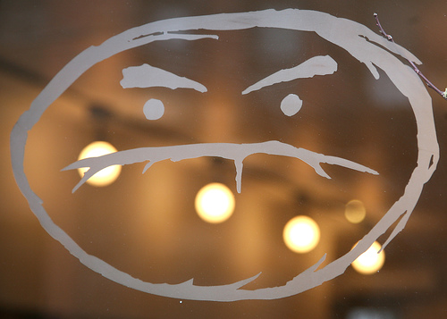
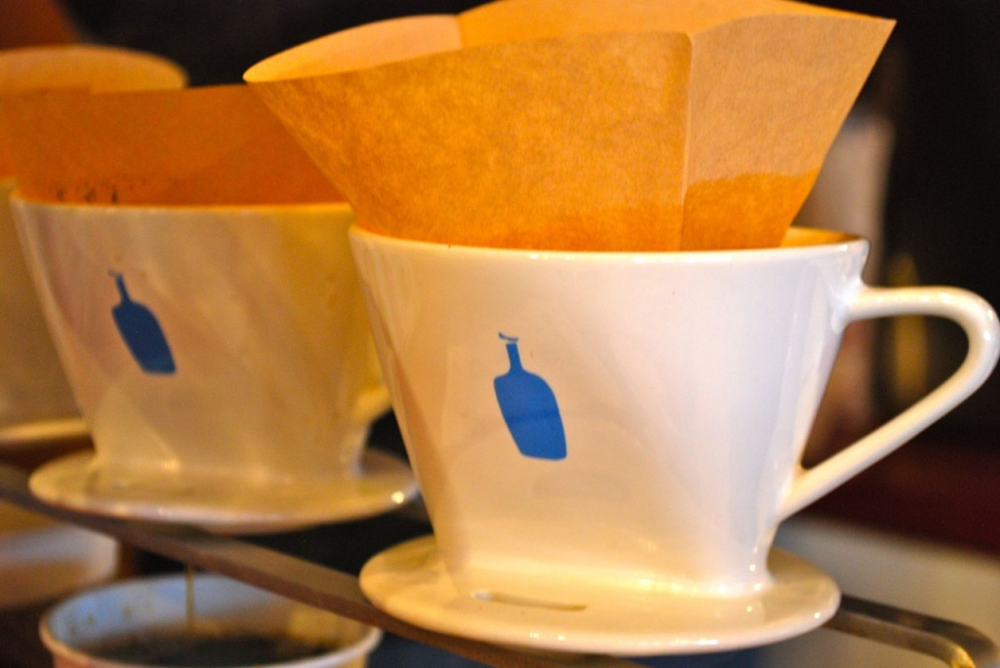
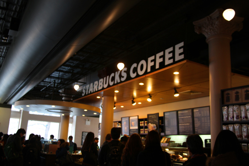

ABSTRACT
This paper analyzes clever marketing implemented by Starbucks and how Starbuck's legion popularity caused sections of the middle class to harbor anti-Starbucks sentiments.
Specifically it examines the independent coffee movement-the creation of local coffee establishments in a metropolitan area.
The analysis of the independent coffee movement is first preceded by the cultural relevance coffee has in American culture due to a rich tradition of coffee houses and the subversion of our ideals about coffee.
The discussion of the independent movement involves sociological analyses and the author's observations on why young people, specifically those born within generation y and the new millennials, express their insecurities about consumerism by rejecting the mainstream.
By using coffee as a metaphor and vehicle for narrative, a systematic investigation reveals that consumer cynicism is nothing more than an excuse for people to pursue cultural and social relevance.
Joe (West Village)
The original Joe opened on this leafy West Village corner in 2003, an eternity ago in coffee, and it still has a Sesame Street friendliness. All the Joe's reinvented themselves in 2009 and you can taste the difference. The coffee was always good; today it's a standout. One of the City's Best. -Oliver Strand
141 Waverly Place (at Gay Street) New York, NY 10014
INTRODUCTION
Before I had a cup of coffee from a cafe other than a Starbucks, I had already downed a couple hundred Ventis to at least claim that my taste buds were already acclimated to the taste. So entering an independent coffee house in New York City for the first time, suggested by a friend of mine, I was immediately humbled and amazed by the place as a whole. Tucked inside the foundations of a building on the corner of Sullivan Street, Third Rail Coffee's shoebox like interior created a claustrophobic but somewhat intimate environment, coupled with tables in the size of records.
Sure, the coffee bar was barely the size of a surfboard, but with a trusty Marzocco hissing away as it steamed milk and dedicated baristas trashing even the slightest of blemished espressos in order to achieve caffeinated perfection, I couldn't help but forgive the minuteness of the wooden plank. And of course, the coffee was tasty and sweet enough to drink it without a grain of sugar. At first sip, the humble drip produced a sensory overload, containing fewer amounts of bitter, more amounts of sour and acidic, and a balance of fruity and sweet; basically it was a step above Starbucks Arabica based coffee.
It helped that the menu contained a variety of beans that more resemble a united nations of South America, provided by coveted bean roasters Portland based Stumptown and Coffee Culture. Indulging in tasty coffee, in lively conversation exchanged by beautiful people, in a picture-perfect scene of solitude, I found myself indulging in my own daydreams about this coffeehouse: coming to Third Rail to read books, bring friends, listen to music, or everything altogether.
Perfect shop, perfect experience.

Cafe Grumpy on 224 West 20th Street
Yet to my dismay, the vignettes racing through my mind were not my original creation but ideas implanted by caffeine driven culture. To characterize what I was thinking as cliche sounds harsh in its bluntness, but brutally true due to clever marketing and the science of coffee; unveiling the illusion otherwise known as ideal immediately loses its zeal. Like some high school students going to college, I convinced myself that coffee was the solution to the problem almost every person is conflicted with: how do I stay productive? Coffee in itself is rather a chemical concoction instead of a leisurely beverage.
Inside each twelve ounce cup, there are 100 sulfur-containing components such as the fecal odor creating dimethyl disulfide and disurlfuryl sulfide. Frankly none of this even matter compared to the almighty diuretic Caffeine. When coffee is ingested, caffeine is then quickly absorbed from the gastrointestinal tract into the bloodstream.
Thus the chemical prepares to distribute itself throughout the entire body and is eliminated by metabolism in the liver. The behavior effects of caffeine are slightly ambiguous once caffeine is acting in the body due to various placebo-related studies, but what is universally accepted is that caffeine users show higher levels of perceptual activities and increased attention. In short, coffee will make you focus better, pee a lot, all the while keeping you as alert as possible.
La Columbe
The newest Colombe in Manhattan is also the most striking: cast-iron columns, marble counters, colorful tiles. The coffee bar is an island in the middle of the high-ceilinged room, a theater of espresso. -Oliver Strand
400 Lafayette Street (between East Fourth Street and Astor Place) Manhattan, NY 10003
While the effects of caffeine can persuade any newbie to become a regular, coffee still needed strong marketing in order to create relevance in our society. Good marketing gives a product that the consumer asks for, but great marketing creates a cultural relevance and entices by way of implanting loose yet connected ideas.
In this case, coffee was already an old-timey luxury rooted in the celebratory respite of the 1940s, but had a slump in consumption when the carbonated giants of Coke and Pepsi kicked coffee off the perch for Americas caffeinated drink of choice. Why drink something that was so bitter when a sweet and tasty alternate was already available to the masses. As America reveled in the bubbly and refreshing fizz, Starbucks emerged from the ashes of coffees so-called death.
In 1990, there were approximately 200 coffee houses in the United States. Along came Starbucks which would cause that figure to balloon over 14,000 where Starbucks would own 30 percent of that total. European countries had already supplanted a rich coffee culture with its cherished espresso and public coffeehouses, but America would later create its own niche where the Seattle giant would later subvert our ideas of the opaque drink. What was earlier regarded as a yuppie drink later became a consumer good for the public that served all the multifaceted demographics of America; the intended audience is usually female, college-educated, and politically-moderate.
Manipulative or not, implanting attractive ideas associated with coffee helped bring it to the mainstream, and for added force, chains started monopolizing every corner in seeing distance of each other. With every chain came the straight googlization of every store where each cafe attempted to become a forerunner of culture by way of blasting catchy music on the stereo, all the while offering free wifi so that the workaholic would stay for many hours at a time; go to your neighborhood Starbucks and count how many people are clacking away on their laptops.
Even in Starbucks vice president Dave Olsens book, Starbucks passion for coffee: A Starbucks coffee cookbook, Olsen describes the coffeehouse as the ideal place for people who want to be alone but need company for it where the masses can study, sketch or write. Of course every successful business needs its copycats and so spawned the privatization of space in restaurants where the primary goal of every manager was to keep you at their respective chain as long as possible: examples include Dunkin Donuts, McCafe, and almost every single food chain. Whether or not coffee is sold at a food chain, the general trend is to provide a public space where one can maintain privacy simultaneously. I must admit that I had written this essay in cafes not just because I know I will succumb to the infinite number of distractions in my own privacy, but because I can work in a little private bubble while the public eye pressures me into either working or reading.
However, the primary distinction between a coffee-house and any other destination, whether if it is a bar or a restaurant, is the social atmosphere cafes create. Where the customer buys a cup of coffee that represents a fusion of privacy with a public vibe, the same association applies to a group of two or more people who only want to be social. The social experience that Starbucks took advantage of is rooted in the history of the original English coffeehouse.
Around the mid-seventeenth century, during the coffee-houses beginning, these social gatherings acted as hubs where the aristocrat and the connoisseur could banter without a thought about rank. Devoid of rowdy behavior such as gambling and rough-housing, the classic coffeehouse thus encouraged sophistication and peaceful conversation above all else. Our modern ideas about the contemporary cafe would then surround the idea about a place where one must be at his most elegant behavior. As the upper-middle class flocked to more and more Starbucks, we were simply carrying out a tradition of bourgeoisie privilege at a more affordable and accessible cost.
Everyman Espresso (Union Square)
The little coffee bar that could. Tucked in a corner of the lobby of the Classic Stage Company, Everyman deserves its citywide following for espresso: Counter Culture beans, Synesso machine, good technique. Recently, Everyman brought up its brewing. Now there are also single-origin coffees on the AeroPress or Bonmac. So much going on in such a small space. -Oliver Strand
136 East 13th Street (between Third and Fourth Avenues) New York, NY 10003
Thus, the term "coffee-talk" was conceptualized to explain the etiquette of conversation in cafes. In modern terms, the sophistication of early industrial coffee-talk is translated to people taking a break to take part in general small talk. While eavesdropping numerous times due to my lack of concentration on my own tasks, I have repeatedly heard conversations about how a person was climbing the social or business hierarchy. It's odd that matters of class and status characterize these "coffee-talks", but then again, it all points to the way how Starbucks has put its foothold in our minds when it comes to the cultural relevance of coffee.
As stated earlier, Starbucks chains started appearing on almost every corner within seeing distance of each other, but only in areas where gentrification of the upper-middle class invaded. To the beholder, it resembled a corporate takeover, but the all encompassing fear that was associated with the appearance of a Starbucks was higher rent because the general demographic Starbucks targets are of the upper middle classes. As an example, a Starbucks finally appearing in a district is like the moment when Greenwich Village was suddenly flooded by artists. The original residents of the village would have to either fork up the cash for higher rents or move out and seek refuge in the next big thing (i.e. Williamsburg).
And in the past coffee-houses ignored class, but because of the class-shift now associated with Starbucks, talks about class and money appear to be ever more prevalent. For added injury, nothing angers the original residents more than seeing new movers such as the professional educated worker takeover their homes and wreak havoc on the traditions that the present sub-culture has already established. Among coffee-shop loyalists and Starbucks critics alike, the "Anti-Starbucks discourse" did not cease to stop. Under severe consumer pressure, Starbucks introduced a fair trade coffee brand in 2000 to show how socially responsible they were, yet fair trade only makes up a small percentage of their coffee purchases. This had little effect on the already prevalent anti-Starbucks sentiment.
It must be said however that although the motive to satisfy the customers' view of Starbucks is more or less profit-driven, Starbucks' efforts in social justice are admirable considering the wide range of campaigning activities such as the Cafe Practices Program that are attempting to better the well-being of small producers. However, the constant abhorrence continuously manifested itself in some mutable form. On coffee connoisseurs' web sites, Starbucks was berated for over roasting their beans, and for "debasing the espresso experience". Activists later assailed Starbucks for their "deleterious effects on the local coffee trade, and the environment".

Blue Bottle Coffee
With all the hate towards the Seattle giant, the local or independent coffee shop took the role of the counter culture and subsequently, the place where all the Starbucks-based animosity was accumulated. There is no exact cause, but many equate the growth of independent cafes to the import of Stumptown, a coveted coffee roaster based in Portland, from the West coast to the Big Apple in 2009. Stumptown immediately found a loyal market of coffee addicts looking for a Starbucks alternative, and later, a wave of independent cafes followed to establish themselves in the already tested waters of the new market. Although the conviction towards hating Starbucks has somewhat died down from the 1990's, the independent coffee movement is as trendy as ever, especially in New York.
Over the last two years, more than 40 new cafes "have joined a small, dedicated group of establishments where coffee making is treated like an art, or at least a high form of craft". Yet, while I've been using "independent" to characterize these small-business cafes, the irony is that these metropolitan cafes are all derivative each other in terms of decor and substance. To remark about anti-Starbucks sentiments in these cafes is improper etiquette, yet the cafe itself is Starbucks-based hate, personified. When I had entered Third Rail for the first time, I couldn't help but recognize the major differences of the interior compared to my neighborhood Starbucks.
Despite having little to no skepticism at the time, each subsequent visit would cause me to raise question upon question about the ridiculousness of the cafe itself. Why did the baristas have tattoos on their entire bodies, like their bodies were replicas of the Sistine chapel? Why were there political paintings and pictures on the walls? Is that a heart in my coffee? As I became more conscious of the frivolity of the place itself, I ignored these questions simply because, as naive as this sounds, I felt hip and cultured. I later jumped from cafe to cafe only to find the same setting, albeit in another part of Manhattan.
Each difference helped to distinguish these cafes from Starbucks chains, but the changes in atmosphere served as an illusion to the harsh realization that "a coffee shop was more or less like Starbucks". The background music in these different cafes was "sophisticated enough" to be labeled as indie, and the beans were considered to be of a high quality, but other than these differences, these coffee-houses were just a hipster version of Starbucks chains. As a consequence of becoming completely enamored by how foreign Third Rail was to me, I have to admit that I became (and in many ways still am) a Starbucks hater, but at least I was not the only one. According to Accounting Principles, young professionals and college students are spending twice as much weekly on coffee than workers over 45. Considering the fact that the remaining 58% of cafes consist of smaller chains or single-location establishments and that New York City has proportionally more 18-34 year olds than the entire nation, young people are fueling the indie coffee scene. And because the generation of 18 to 34 year olds is leading the independent coffee movement, I believe the war on Starbucks may be attributed to my generation's insecurities about society.
Espresso, Intelligentsia from The D4D on Vimeo.
Third Rail Coffee
Third Rail Coffee punches above its weight: One of the smallest coffee bars in the city is also one of the most exceptional. And it's one of the few to pull two kinds of espresso, Intelligentsia Coffee and Tea's Black Cat and Stumptown Coffee Roaster's Hair Bender. Order a cortado, squeeze behind a table the size of an LP, and taste just how much New York coffee has changed for the better. One of the City's Best. - Oliver Strand
240 Sullivan Street (near West Third Street) New York, NY 10012
In our techno-consumer age where someone is always trying to sell you something, it's reasonable to use cynicism as self-defense and as a means to convey "a demeaning sense of helplessness and insecurity". But this cynicism then develops a self-consciousness about the corruption a corporation has causes which detracts from the pleasure of products like Starbucks coffee. Although he was born in an older generation, author Jonathan Franzen exemplifies the pessimism one feels when he is exposed to a defilement of culture. As a man whose depression deepened as society's high standard degraded due to increased participation in consumer entertainments and less participation in reading serious fiction, Jonathan Franzen describes the insecurity one's cynical feelings create in his short essay, "Why Bother?".
Here, he says, "The more persuaded you are of your unique access to the rottenness", the more appalled you feel engaging with the mainstream. As society convinced itself to fork over cash for televisions rather than books, Franzen's pessimism persisted as he explained the effect of capitalism on literature. In retrospect however, Franzen's insecurities were unnecessarily overcomplicated to hide the simple cause of his sadness: being unfortunately a writer, society was reading less fiction, and he was having trouble writing his third novel, The Corrections.
In the same respect, people hide their reasons why they attend independent coffee- houses behind complex cynicism because they do not want to admit they are pursuing cultural relevance. From the 1980's and 1990's, sections of the middle class took to consuming "exotically traditional products" that suggested more interesting places and times. To distinguish themselves from "the banality of technologically-mediated mass culture", rising classes sought after exotic coffee-blends for "symbolic distinction". As chains of Starbucks continuously spawn on every corner and while Dunkin Donuts and other coffee clones follow suit, more and more young people seek smaller cafes in order to put the "cultural" in "cultural middle class."

I was kicked out of this starbucks for taking pictures
Our desire to differentiate ourselves from the regular middle-class and lower-class folk is even more frivolous because we have to cry anti-consumerism and anti-establishment in order to claim that we are fighting for a righteous and not ridiculous cause. The need to feel unique thus detracts from the simple pleasures of coffee because we focus our energies on the negative aspects of the things we take pleasure from, instead of delighting ourselves on the elements that make us fulfilled and happy. If "cocaine is to Robert Louis Stevenson" then the "espresso was to writer Honore de Balza". On the stimulation coffee produces, Balza writes how caffeine literally wages war on the senses. "... Everything becomes agitated. Ideas quick-march into motion like battalions of a grand army.. Memories charge in, bright flags on high.. The paper is spread with ink". Here, coffee creates a euphoric state of attentiveness when the liquid enters our mouths and continues through the entire body.
However, we are unable to enjoy this same sensation over and over again when we, like the coffee, are bitter because our thoughts about pleasure are ignored. Because I have cited Franzen's work, I feel obligated again to use his example to at least illustrate the feelings I felt towards Starbucks. When I had no access to coffee other than store brand and Starbucks coffee, I forbid myself from drinking a tall black coffee from the nearest chain in my neighborhood. This all happened when I needed to write a couple of essays, and as I continuously attempted to type words onto pages, my head would fall on my laptop because of my lack of focus.
Franzen's personal essays and works of fiction are often characterized by an ending of redemption, and with that note, I caved and bought a venti. It was a hard decision to admit how wrong I was (or stupid), but when I look back at why I abstained from coffee, I remember the reason that pushed me towards the addiction: I needed to concentrate. And although I did not experience despair equivalent to Jonathan Franzen's own tragic realism, I still feel there was some parallel in how reconciliation and acceptance was achieved.
I harbor negative feelings towards Starbucks to this day, but I'm willing to buy an Americano if required to. Like the young people of my generation, avoiding the banal nature of mass-culture entitles me to smugness. However, returning to the mainstream for a cup of coffee forever trumps cultural disdain because no one wants to be bitter forever. And frankly, bad coffee is better than no coffee at all.
Written and made by Sean Kwon
For Connected Documentary taught by Ben Moskowitz